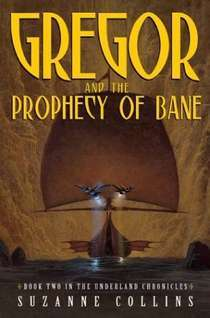
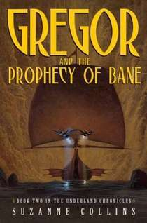

GREGOR AND THE PROPHECY OF BANE
 

A NEW YORK TIMES BESTSELLING SERIES
A BOOK SENSE BESTSELLING SERIES
A BOOK SENSE CHILDREN'S PICK
2005 CONNECTICUT BOOK AWARD FINALIST--CHILDREN'S LITERATURE
"Collins crafts another edge-of-the-seat quest... Gregor's resolution of the prophecy will
surprise and delight readers--who will be equally delighted to see a new prophecy in Gregor's
luggage when he returns home. Yessss!"
--Kirkus Reviews
"...fans will not be disappointed with this exciting, action-packed sequel, whose ending
suggests more adventures to come."
--Booklist
"As in the first book, the questers face adventure, danger, death, loss, and change on their
journey, and the surprising conclusion leaves room for another sequel. Interpersonal conflict
and old enmities among the well-developed characters add depth, and the hazards and beauties of
the subterranean Underland are fully realized and clearly presented. An urgent mood and a sense
of impending danger are conveyed. This is a strong choice for fantasy fans, including reluctant
readers, even if they're not familiar with Gregor's first adventure."
--School Library Journal
"Along with many Underlanders [rats notwithstanding], Gregor's fans will cheer the promise of
future visits."
--The Horn Book Magazine
"Danger abounds, calling for courage and ingenuity. Gregor consistently makes the right choices
and triumphs. Fast-paced adventure and endearing characters make this book an excellent
selection for younger fantasy readers."
--VOYA
Selected Works
PICTURE BOOK
YEAR OF THE JUNGLE"Important and necessary."
--Kirkus Reviews, STARRED REVIEW
WHEN CHARLIE MCBBUTTON LOST POWER
"A clever, humorous story in rhyme"
--School Library Journal
SCI-FI
MOCKINGJAY
"...every bit as original and thought provoking, as The Hunger Games. Wow."
--Los Angeles Times
CATCHING FIRE
“...doesn’t disappoint when it segues into the pulse-pounding action readers have come to expect.” --Publishers Weekly, STARRED REVIEW
THE HUNGER GAMES
“...a superb tale of physical adventure, political suspense, and romance."
--Booklist, STARRED REVIEW
FANTASY
GREGOR THE OVERLANDER
“...readers will likely find [the Underland] to be a fantastically engaging place.”
--Publishers Weekly, STARRED REVIEW
GREGOR AND THE CURSE OF THE WARMBLOODS
“...immensely readable installment..."
--The Horn Book Magazine
GREGOR AND THE MARKS OF SECRET
"...will leave readers gasping..."
--Kirkus Reviews, STARRED REVIEW
GREGOR AND THE CODE OF CLAW
"...excellent acquisition for any library."
-VOYA
QUICK LINKS
Scholastic
Penguin Group
NPR
Listening Library
Indie Bound
Barnes & Noble
Books-A-Million
Amazon
Authors Guild